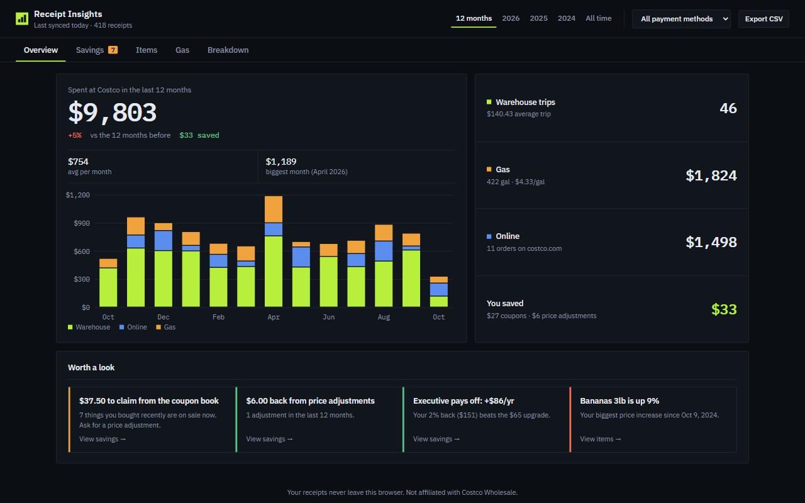
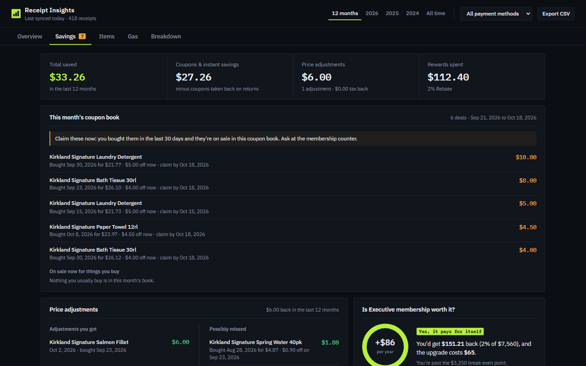
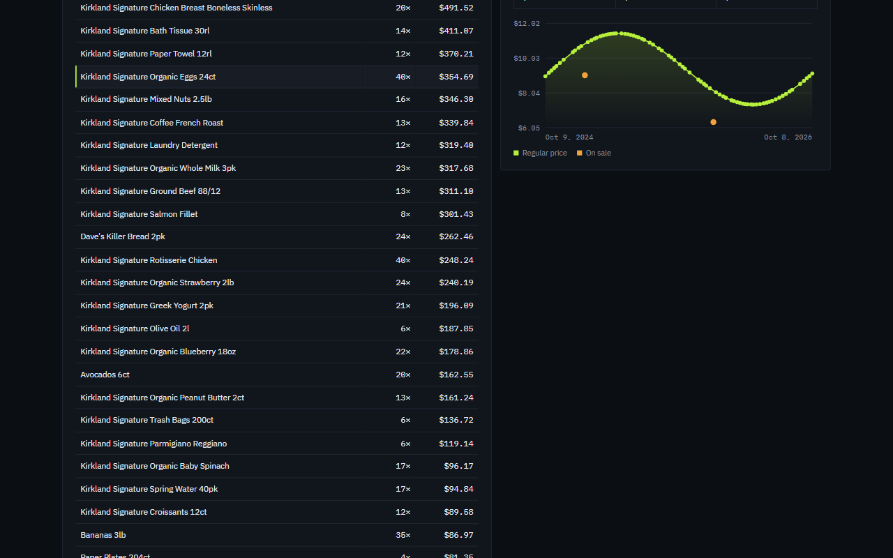

See where your Costco money goes.
Receipt Insights reads the receipts already in your Costco account and turns them into a clear, private dashboard. It shows spending, gas, price history, and money you can still get back.
Works in Chrome, Brave and Edge with a costco.com (US) account.

What it shows you
Spending
Totals, trips, average trip, and a monthly chart split into warehouse, online and gas.
Money back
This month's coupon book matched against what you buy, plus price adjustments you got, can still claim, or missed.
Executive membership
Whether the 2% reward beats the $65 upgrade, from your real purchases.
Price history
What you've paid for every item over time, with sales and adjustments marked.
Gas
Gallons, price per gallon over time, fuel type, and every station you've used.
The details
Groceries vs everything else, sales tax, locations, payment methods, food court, and CSV export.


How it works
- Install the extension and sign in at costco.com like you normally do.
- Click the Receipt Insights button and choose Sync receipts. It reads your warehouse, gas and online receipts from your Costco account.
- Open your dashboard. Sync again any time to pick up new trips and this month's coupon book.
Free and Pro
Pro is a one-time $10 purchase. Pay once, keep it for good. One price adjustment usually covers it.
| Feature | Free | Pro |
|---|---|---|
| Sync warehouse, gas and online receipts | Yes | Yes |
| Spending overview and monthly chart | Yes | Yes |
| Executive membership calculator | Yes | Yes |
| Item list (last 12 months) | Yes | Yes |
| Coupon-book deals on things you buy | Yes | Yes |
| Recent purchases you can claim a price adjustment on | Total only | Yes |
| Price adjustments you may have missed | Total only | Yes |
| Price history for every item | No | Yes |
| Gas tracking | Totals | Yes |
| Groceries vs everything else, sales tax, locations, payment methods | No | Yes |
| Every past year, payment filter, CSV export | No | Yes |
Private by design
- Your receipts are stored only in your browser, never on our servers. We don't have any.
- It uses the costco.com sign-in you already have. It never sees or stores your password.
- No sign-up, no tracking, no ads. Remove the extension and its data is deleted.
- Pro purchases are handled by ExtensionPay and Stripe. Your receipts are never shared with them.
Questions
Is it made by Costco?
No. Receipt Insights is an independent product and isn't affiliated with, endorsed by, or sponsored by Costco Wholesale Corporation.
Which receipts does it include?
In-warehouse receipts, gas station receipts and costco.com orders, as far back as Costco keeps them in your account. Food court and pharmacy purchases show up only if your membership card was scanned.
How does it find price adjustments?
It reads Costco's current coupon book and compares it with what you bought in the last 30 days at full price. It also spots times you bought something again on sale within 30 days without getting an adjustment.
What does the charge look like?
Pro is a one-time $10 charge through Stripe. It appears as "ELO APPS" on your card statement.
Does it work on my phone?
Not yet. It's a desktop browser extension for Chrome, Brave and Edge.
Need help?
Open an issue on GitHub and we'll get back to you.